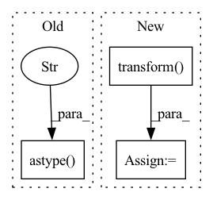

Pattern ID :36967

Before Change
img = io.imread(image_path)[:, :, :3].astype("float32")
img = transform.resize(img, (self.shape, self.shape))
mask = self.get_mask(mask_folder, self.shape,
self.shape).astype("float32")
augmented = self.transforms(image=img, mask=mask)
img = augmented["image"]
mask = augmented["mask"]
After Change
img = Image.open(image_path).convert("RGB")
mask = self.get_mask(mask_folder)
img = self.transform(img)
mask = self.target_transform(mask)
return img, mask, fname
In pattern: SUPERPATTERN
Frequency: 3
Non-data size: 3
Instances
Fragment ID: 105215969
Project Name: tuttelikz/farabio
Commit Name: 2169ebbe0a5d7c4307303181cdf96c0f802f8da6
Time: 2021-07-29
Author: s.askaruly@gmail.com
File Name: farabio/data/biodatasets.py
M Class Name: DSB18Dataset
N Class Name: DSB18Dataset
M Method Name: __getitem__(2)
N Method Name: __getitem__(2)
M Parent Class: Dataset
N Parent Class: Dataset
M File Name: farabio/data/biodatasets.py
N File Name: farabio/data/biodatasets.py
M Start Line: 223
M End Line: 237
N Start Line: 238
N End Line: 247
'>
Before Change
img = io.imread(image_path)[:, :, :3].astype("float32")
img = transform.resize(img, (self.shape, self.shape))
mask = self.get_mask(mask_folder, self.shape,
self.shape).astype("float32")
augmented = self.transforms(image=img, mask=mask)
img = augmented["image"]
mask = augmented["mask"]
After Change
img = Image.open(image_path).convert("RGB")
mask = self.get_mask(mask_folder)
img = self.transform(img)
mask = self.target_transform(mask)
return img, mask, fname
'>
Fragment ID: 105215968
Project Name: tuttelikz/farabio
Commit Name: 0f431d2e3fa741ab639daade70a7e1e878fa524b
Time: 2021-07-29
Author: s.askaruly@gmail.com
File Name: farabio/data/biodatasets.py
M Class Name: DSB18Dataset
N Class Name: DSB18Dataset
M Method Name: __getitem__(2)
N Method Name: __getitem__(2)
M Parent Class: Dataset
N Parent Class: Dataset
M File Name: farabio/data/biodatasets.py
N File Name: farabio/data/biodatasets.py
M Start Line: 223
M End Line: 237
N Start Line: 238
N End Line: 247
'>
Before Change
//print(image.size(), mask.size())
// return image, mask
return torch.from_numpy(image.transpose(2, 0, 1).astype("float32") / 255), torch.from_numpy(mask.transpose(2, 0, 1))
def __len__(self):
return len(self.images)
After Change
//image = torch.from_numpy(image.transpose(2, 0, 1).astype("float32") / 255)
//mask = torch.from_numpy(mask.transpose(2, 0, 1))
//print(image.size(), mask.size())
image, mask = self.transform(image, mask)
return image, mask
def __len__(self):
'>
Fragment ID: 105215967
Project Name: biasvariancelabs/aitlas
Commit Name: 41369659b6db4a2214243610e6dbe2d0a3522a2a
Time: 2020-10-30
Author: ivica.dimitrovski@gmail.com
File Name: aitlas/datasets/landcover_ai.py
M Class Name: SegmentationDataset
N Class Name: SegmentationDataset
M Method Name: __getitem__(2)
N Method Name: __getitem__(2)
M Parent Class: BaseDataset
N Parent Class: BaseDataset
M File Name: aitlas/datasets/landcover_ai.py
N File Name: aitlas/datasets/landcover_ai.py
M Start Line: 31
M End Line: 44
N Start Line: 31
N End Line: 43